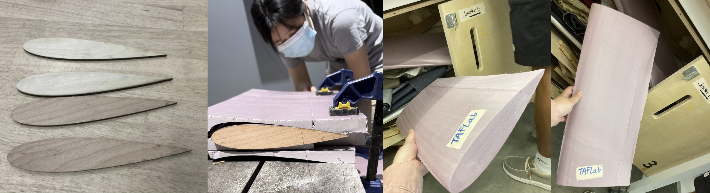
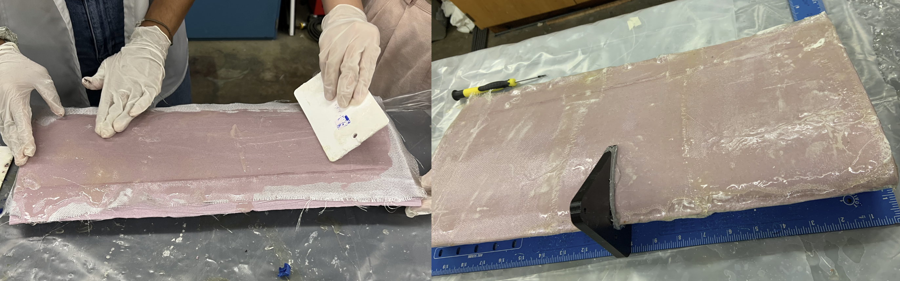
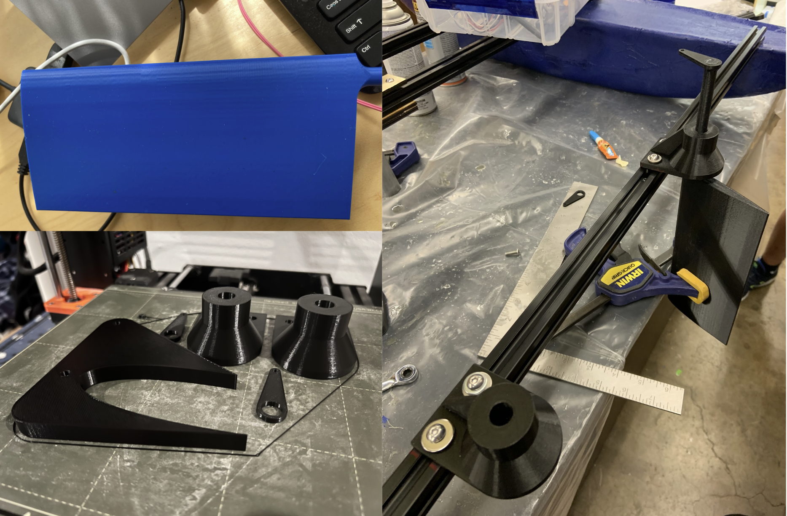
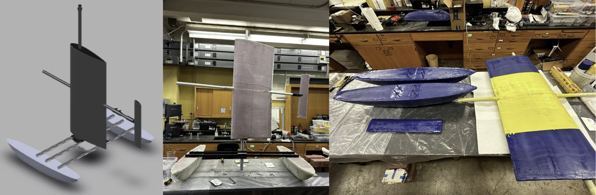

Dates: May 2023 – August 2023
Team: Ocean Drone
Focus: Mechanical design and fabrication of sailboat components for a swarm of ocean drones
I joined the TAFLab ocean drone project, contributing to mechanical design, prototyping, and manufacturing of an autonomous sailing catamaran. The project worked towards creating a fleet of autonomous surface vehicles to traverse open water to a target location using wind propulsion and servo-controlled steering. Much of the high-level design had been established by prior team members; my work focused on finalizing hull and mini-sail dimensions, improving the manufacturing process, and manufacturing and integrating physical components.
The TAFLab ocean drone project was working on making small autonomous drones capable of efficient open-water sailing while carrying onboard electronics. The boat had to be physically compact, hydrodynamically efficient at low speeds (~2 knots), and light enough to be displaced by a small catamaran hull volume. The prior prototype had revealed several design, manufacturing, and integration issues that limited build quality and repeatability, and the CAD files were in 2022 OnShape, which lacked simulation and analysis capability for future development.
The team's first approach to sizing the hulls was to find dimensions that could displace a given assumed mass (20 kg total, 10 L per hull), working backwards from displacement to cross-section. This approach unfortunately did not maximize hydrodynamic efficiency. A heavier boat requires more displacement, which increases wetted surface area and drag in a compounding cycle.
I worked on hull redesign, and reframed the problem as: given a fixed 1 m hull length, what is the maximum load the boat can carry while still sailing efficiently? Using established naval architecture scaling ratios, I derived the hull parameters as follow:
A length-to-beam ratio of 7 is ideal for heavily-loaded displacement hulls. For a 1 m hull:
\[ B_{WL} = \frac{L}{7} = \frac{1\,\text{m}}{7} \approx 0.14\,\text{m} \]A beam-to-draft ratio of 2 minimizes frictional resistance while avoiding a narrow, deep hull profile:
\[ T_c = \frac{B_{WL}}{2} = \frac{0.14}{2} = 0.07\,\text{m} \]The midship coefficient \(C_m\) describes the shape of the hull cross-section relative to a bounding rectangle. A value of \(C_m = 0.8\) corresponds to a more elliptical (vs. parabolic) shape, minimizing wetted surface area for a given displacement:
\[ C_m = \frac{A_m}{T_c \times B_{WL}} = 0.8 \quad \Rightarrow \quad A_m = 0.8 \times 0.14 \times 0.07 = 0.00784\,\text{m}^2 \]where \(A_m\) is the maximum cross-sectional area of the hull at the midship point.
The prismatic coefficient \(C_p\) describes how "full" the hull is relative to a cylinder of the same midship cross-section and length. It is selected from the speed-to-length ratio:
\[ \frac{V}{\sqrt{L}} = \frac{2\,\text{kn}}{\sqrt{3.3\,\text{ft}}} \approx 1.1 \quad \Rightarrow \quad C_p \approx 0.55 \] \[ C_p = \frac{\nabla}{A_m \times L_{WL}} \quad \Rightarrow \quad \nabla = C_p \times A_m \times L_{WL} = 0.55 \times 0.00784 \times 1 = 0.00431\,\text{m}^3 \text{ (per hull)} \]The total mass the catamaran can displace while sailing efficiently across both hulls:
\[ m_{\text{disp}} = 2 \times B_{WL} \times L_{WL} \times T_c \times C_p \times C_m \times \rho_{SW} \] \[ = 2 \times 0.14 \times 1 \times 0.07 \times 0.55 \times 0.8 \times 1025 \approx \boxed{8.9\,\text{kg}} \]Both the main sail and mini-sail use a NACA-0018 symmetric airfoil profile, chosen for its thickness and lift characteristics at low Reynolds numbers. The main sail is 1 m tall × 0.5 m chord; the mini-sail is 0.5 m tall × 0.12 m chord, sized to approximately 10–12% of the main rig area. A no-taper rectangular planform was chosen over a tapered design because the uniform center of gravity simplifies positioning with linear actuators. The two sails are separated by b/2 = 0.5 m (half the main sail height), with separation controlled by linear actuators.
I revised the mini-sail geometry from the prior version, which was too small and thin to generate sufficient steering force. The updated dimensions are 0.5 m tall × 0.5 m wide with a NACA-0018 profile at increased thickness. Laser-cut plywood templates of the airfoil profile were used to guide hot-wire foam cutting. The foam core was then fiberglassed with three layers of fiberglass/epoxy and left to cure for five days before spray painting.
Hull geometry was modeled in SolidWorks based on the calculated parameters: 1 m length, 0.14 m waterline beam, 0.07 m draft, Cm = 0.8 (elliptical midship section), Cp = 0.55. The resulting midship cross-section area at the largest point is 0.8 × 0.14 × 0.07 = 0.00784 m². The spoon-shaped bow transitions smoothly into the parallel mid-body, tapering to a vertical stern to minimize wave-making resistance at the operating speed/length ratio.
Hull dimensions were derived analytically using established catamaran design ratios (beam ratio, draft ratio, midship coefficient, prismatic coefficient) rather than CFD, which is appropriate for a displacement-speed vessel at this scale. The approach was validated against two independent references: a speed/length ratio table from catamaran design literature, and Claes Tretow's "Design of a free-rotating wing sail for an autonomous sailboat" stating Cp = 0.54 is appropriate at the target S/L ratio of 1.1. Total displacement was verified by computing mass displaced: 2 × Bwl × Lwl × Tc × Cp × Cm × ρ = 8.9 kg.
The keel uses a NACA-0012 profile with an elliptical planform, selected for its lower drag coefficient at the operating speeds. Lift force was calculated using L = Cl × (ρV²/2) × A, with Cl = 1.05 at 10° angle of attack, seawater density = 1025 kg/m³, velocity = 4 m/s, and projected area = 0.0078 m², yielding a lift force of 4.25 N.
Keel lift force was calculated using the standard lift equation to ensure sufficient lateral resistance at operating speed:
\[ L = C_l \cdot \frac{\rho V^2}{2} \cdot A \]where \(C_l = 1.05\) at 10° angle of attack (NACA-0012), \(\rho = 1025\,\text{kg/m}^3\) (seawater), \(V = 4\,\text{m/s}\), and \(A = 0.0078\,\text{m}^2\):
\[ L = 1.05 \times \frac{1025 \times 4^2}{2} \times 0.0078 \approx \boxed{4.25\,\text{N}} \]Rudders were 3D printed on the Fortus printer at Jacobs Hall. Two rudders were printed to allow for redundancy. The rudder mounts connect to the third T-slot rail spanning across the hulls and attach via servo-actuated linkages for directional control.
All CAD files were migrated to SolidWorks, with a shared GitHub repository established for version control and team file access. During test assembly of previously printed components, the servo mounts were found to have zero clearance tolerance, preventing fit. A 0.1" tolerance was added between mating components in the assembly models and the parts were reprinted, resolving the fit issues.
My fabrication contributions:



Old Process:
New Process:
One process improvement identified during hot-wire cutting: using a bow-style frame to hold the cutting wire (rather than two people each holding one end of a stick) would provide more constant tension and cutting speed, reducing the warping that occurred from uneven pulling angles and rates between operators.
During the mini-sail fiberglass layup, air bubbles formed consistently along the trailing edge of the airfoil. Root cause: the epoxy began curing before all air could be worked out, compounded by working on many small fiberglass pieces sequentially (with the trailing edge done last). The fix for future layups would be to use two large pieces of fiberglass rather than many small pieces, reducing total working time and leaving more time to push out resin and air before the epoxy sets.
The prototype was not fully completed during my time on the project — servo attachment to the mini-sail and rudders remained as next steps. Despite this, the physical structure, hull manufacturing process, CAD infrastructure, and dimensional calculations were all substantially advanced beyond the prior state.

-->I learned a lot from both the team's past lessons as well as from difficulties I encountered:
Hand calculations • Airfoil selection and lift force calculation • Composite layup and mold design • CAD (SolidWorks) • Tolerance analysis • Manufacturing process development
Email: jennifersili@berkeley.edu
LinkedIn: linkedin.com/in/jennifersili